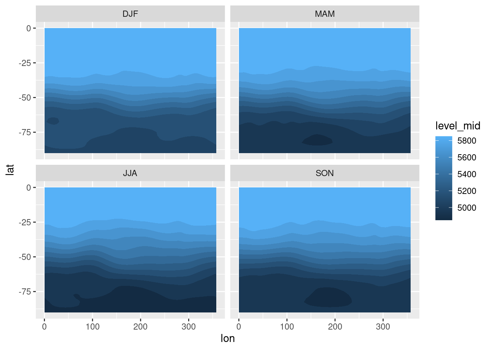
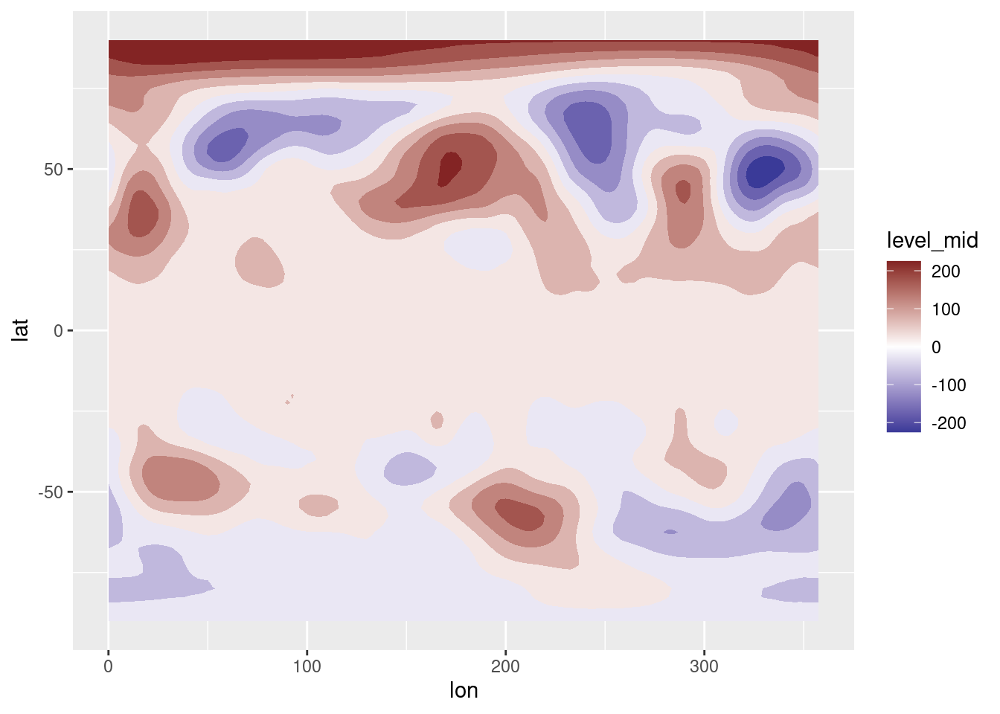

A wrapper for the Climate Data Operators in R
Today I’m extremely happy because I’ve finally been able to fulfil a dream of mine. And yes, by the end of this blogpost you might be worried about me for having such a weird, niche and, frankly, dumb dream, but I swear I’m fine!
My dream was to create an R wrapper for the Climate Data Operators (CDO) automatically from its documentation.
CDO is a command-line utility that provides a plethora of functionality common to climate science. Things like computing monthly means, interpolating to grids, computing correlations, etc. It’s incredibly fast and convenient, can work with larger-than-RAM data for many operations as long as one horizontal field fits into memory, and can even run in parallel.
The only rub is that using CDO from R is kind of a pain.
It means building system commands by paste0ing files and names of operators and managing the input and output files.
Dreadful, unreadable code like this
in_file <- "input_file.nc"
out_file <- "climatology.nc"
system(paste0("cdo ymonmean ", in_file, " ", out_file))Oof. The stuff of nightmares, indeed.
Having a package that did all that for me including documentation and auto completion would be incredibly cool, but CDO has literally hundreds of different operators; wrapping all of them would be an herculean task. It’s just not worth it…
Is it?
A few years ago I watched a talk by Alicia Schep in which she explained how she built an R interface to the Vega-lite visualisation library. This javascript library creates interactive plots based on a json specification of the various geometries, axis and scales. There was a vegalite R package that created these json files from R, but it was outdated and it took a lot of work to get it up to speed. She realised that keeping the package in sync with Vega-lite development was not sustainable. So she actually created a package that took the vega-lite schema and automatically created the R functions that conformed to them.
Neat idea. A wrapper package created automatically from the documentation… could I apply this concept to my dream of running CDO from within R?
Yes and no. It turns out that the CDO API is very straightforward; each operator has a fixed number of inputs and outputs and potentially a couple of required and/or optional parameters. Creating a function that took the name of the operator, the number of inputs and outputs and the parameters was not that hard — there was a lot of reusable code. But unlike Vega-lite, CDO doesn’t have a nicely machine-readable schema that I could ingest; the documentation is in the form of a massive PDF with a lot of little inconsistencies that made automatic parsing very hard.
I did try it, though. I found bit of documentation in the CDO source code and with some text-wrangling I was able to extract part of the needed information. But it was hard and I wasn’t using CDO as much, so eventually I gave up.
The dream laid dormant for a few years.
A few months ago I got my PhD and was fortunate enough to immediately get a postdoc position. In my new job I had to get used to completely different infrastructure and I’m back to analysing relatively large datasets that are not as easy to handle with R. The situation thrust me back into CDO’s arms, where our love bloomed again, along with my desire to wrap it in a cosy blanket made of R.
So these few days, with renewed vigour and 4 more years of R experience, I went at it again. I honestly had all but forgotten that I had already tried this so it was a surprise to see that I already had an rdco repo with an very similar implementation waiting for me. I integrated some of that old code with the new one and the new rcdo package was born.
The rcdo package wraps most CDO operators in a pipable interface. Each operator is its own function with parameters as arguments, enabling autocomplete and documentation right in the R session.
For example, let’s take geopotential height from the NCEP reanalysis.
library(rcdo)
ncep <- "data/hgt_ncep.nc"We can compute the monthly annual cycle with the ymonmean operator, which is wrapped by rcdo::cdo_ymonmean()
ncep |>
cdo_ymonmean()## CDO command:
## cdo ymonmean [ data/hgt_ncep.nc ] {{output}}Running this doesn’t do anything other than to print the command, with the output as a place-holder.
To execute the operator, one needs to use cdo_execute().
ncep |>
cdo_ymonmean() |>
cdo_excecute()## [1] "/tmp/RtmpNmkEms/file10cc641f84c1f"By default the output is saved in a temporary file.
Operators can be chained.
Let’s select just the Southern Hemisphere, only look at 500 hPa and compute the seasonal means.
I will also pipe that to metR::ReadNetCDF() to read the data and plot it with ggplot2.
ncep |>
cdo_sellonlatbox(lon1 = 0, lon2 = 360, lat1 = -90, lat2 = 0) |>
cdo_sellevel(level = 500) |>
cdo_yseasmean() |>
cdo_excecute() |>
metR::ReadNetCDF(vars = "hgt") |>
ggplot(aes(lon, lat)) +
metR::geom_contour_fill(aes(z = hgt)) +
facet_wrap(metR::season(time) ~ .)
Nice!
Some operators take two or more inputs, which can be files or other CDO operations.
For example, to compute monthly anomalies with respect to the 1981 to 2011 climatology first we need to compute the monthly climatology (cdo_ymonmean()) and then subtract it from the data (cdo_ymonsub()):
climatology <- ncep |>
cdo_selyear(years = 1981:2011) |>
cdo_ymonmean()
anomalies <- ncep |>
cdo_ymonsub(ifile2 = climatology) |>
cdo_excecute()Notice that climatology is not a file but a CDO command.
Just for fun, let’s read just one level and one month and plot it.
anomalies |>
ReadNetCDF("hgt", subset = list(level = 500,
time = "2024-01-01")) |>
ggplot(aes(lon, lat)) +
geom_contour_fill(aes(z = hgt)) +
scale_fill_divergent()
Lovely!
Now, the dream is not 100% complete. As I mentioned before, it’s not trivial to parse the CDO documentation, so there are still some issues. Some rcdo functions take extra arguments that do not correspond to their corresponding CDO operator and some arguments are just plain wrong. Some operators are also not supported, such as operators with zero output arguments and some with very hard-to-parse documentation. I’ll be ironing out those kinks, but I’m very proud of how this turned out.